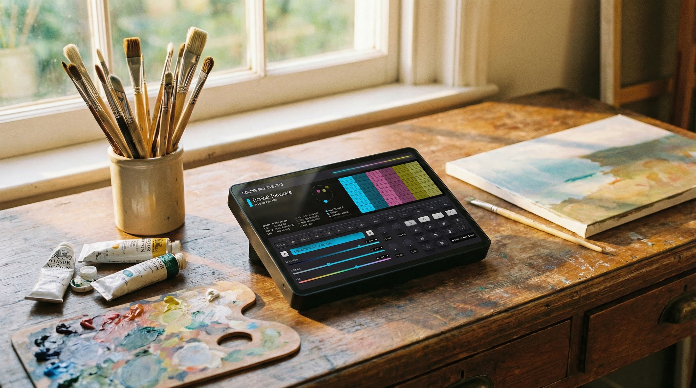

Color Palette PRO – disainiprotsesside automatiseerimine
Intelligentne IoT platvorm värvitöö automatiseerimiseks disaineritele ja loovagentuuridele.

Kliendi väljakutse
Professionaalsed disainerid ja loovagentuurid kulutasid märkimisväärset aega rutiinsetele ülesannetele nagu värvipalettide valimine, variatsioonide genereerimine ja värviskeemide haldamine projektide jaoks. Käsitsi töö värvidega võttis aega kuni 15+ tundi nädalas, aeglustades loomingulist protsessi ja vähendades meeskondade efektiivsust.
Enne
- 15+ tundi nädalas käsitsi värvitööl
- Aeglane loominguline protsess
Pärast
- Automatiseeritud palettide loomine
- Kiire eksport, rohkem loomingule
Meie lahendus
Arendasime välja Color Palette PRO – intelligentse IoT platvormi värvitöö automatiseerimiseks, mis integreerib:
- Nutikad genereerimise algoritmid – automaatne harmooniliste värvipalettide loomine AI põhjal
- 7+ valmis algoritmi värvi töötlemiseks
- XF-7 + Mejora tehnoloogia professionaalse kvaliteediga palettide jaoks
- WIFI + Bluetooth 6.0 seadmete vaheliseks sünkroniseerimiseks
- 90+ eelseadistatud kujundit kiirete alustamiseks
- CGS ja teiste standardite tugi
Töö protsess
Baasne & Element – Põhiparameetrite ja paleti elementide valimine
Genereeri – Automaatne harmooniliste värviskeemide loomine
Kohanda – Eksport ja kohaldamine erinevatesse formaatidesse
Salvesta & Jaga – Palettide raamatukogu salvestamine ja haldamine
Tulemused
Käsitsi töö vähendamine 60% võrra
- Palettide valiku ja genereerimise automatiseerimine
- Kohene eksport erinevatesse formaatidesse
Aja kokkuhoid 15+ tundi nädalas
- Disainiprotsessi kiirendamine
- Rohkem aega loomingulistele ülesannetele
Mastaapsus
- €50,000 kuni €250,000 sõltuvalt ettevõtte vajadustest
- Tugi üksikutest disaineritest kuni suurte agentuurideni
Paindlikud hinnapaketid
Tasuta
Põhifunktsionaalsus startupidele
€99
Standardne tööriistade komplekt (187 kasutajat)
€149
Laiendatud funktsionaalsus, 20GB+ (234 kasutajat)
€279
Täielik professionaalne pakett, 100GB Pro
€299 – €1099
Ettevõtte lahendused
Tehnoloogiad
Platvorm on ehitatud kaasaegsel IoT tehnoloogial, kasutades professionaalseid värvi töötlemise algoritme, pilve sünkroniseerimist ja integratsiooni populaarsete disainiriistadega.
Järeldus
Color Palette PRO demonstreerib, kuidas IoT tehnoloogiad saavad muuta loomeprotsesse, automatiseerides rutiinseid ülesandeid ja võimaldades professionaalidel keskenduda sellele, mis on tõeliselt oluline – loomingule ja suurepäraste disainilahenduste loomisele.
Valmis optimeerima oma äriprotsesse?
Võtke meiega ühendust tasuta konsultatsiooniga.
✓ Vastame 24 tunni jooksul
Võta ühendust